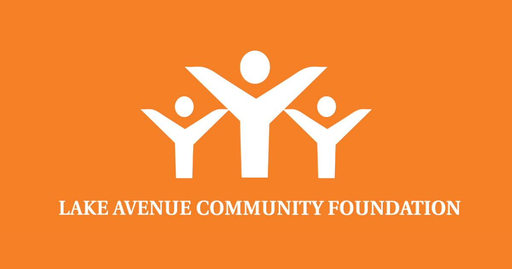

I am a volunteer tutor at Lake Ave Community Foundation. The program where I volunteer is called STARS. I joined early 2016. The students that I work with are from first grade through third grade. During the time I am with the children, we spend at least one hour and thirty minutes to finish their homework or any other academic work. When we have spare time we use that time to read or do math problems. I use that time to help them improve in the areas where their teachers ask for improvement like math or reading. If we have time after that we are usually able to play a board game. I enjoy spending time with the students. It's an amazing feeling to be able to help them.
